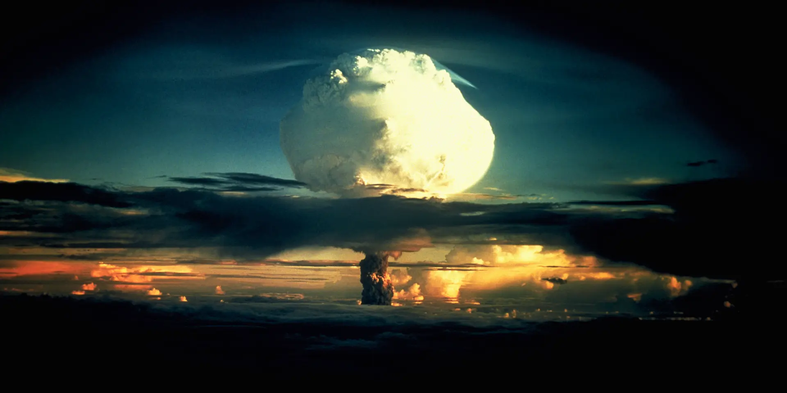

By the time World War II ended, most American officials agreed that the best defense against the Soviet threat was a strategy called “containment.” In his famous “Long Telegram,” the diplomat George Kennan (1904-2005) explained the policy: The Soviet Union, he wrote, was “a political force committed fanatically to the belief that with the U.S. there can be no permanent modus vivendi [agreement between parties that disagree].” As a result, America’s only choice was the “long-term, patient but firm and vigilant containment of Russian expansive tendencies."
“It must be the policy of the United States,” he declared before Congress in 1947, “to support free peoples who are resisting attempted subjugation…by outside pressures.” This way of thinking would shape American foreign policy for the next four decades.
Did you know? The term 'cold war' first appeared in a 1945 essay by the English writer George Orwell called 'You and the Atomic Bomb.'
The containment strategy also provided the rationale for an unprecedented arms buildup in the United States. In 1950, a National Security Council Report known as NSC–68 had echoed Truman’s recommendation that the country use military force to contain communist expansionism anywhere it seemed to be occurring. To that end, the report called for a four-fold increase in defense spending.
In particular, American officials encouraged the development of atomic weapons like the ones that had ended World War II. Thus began a deadly “arms race.” In 1949, the Soviets tested an atom bomb of their own. In response, President Truman announced that the United States would build an even more destructive atomic weapon: the hydrogen bomb, or “superbomb.” Stalin followed suit.
As a result, the stakes of the Cold War were perilously high. The first H-bomb test, in the Eniwetok atoll in the Marshall Islands, showed just how fearsome the nuclear age could be. It created a 25-square-mile fireball that vaporized an island, blew a huge hole in the ocean floor and had the power to destroy half of Manhattan. Subsequent American and Soviet tests spewed radioactive waste into the atmosphere.
The ever-present threat of nuclear annihilation had a great impact on American domestic life as well. People built bomb shelters in their backyards. They practiced attack drills in schools and other public places. The 1950s and 1960s saw an epidemic of popular films that horrified moviegoers with depictions of nuclear devastation and mutant creatures. In these and other ways, the Cold War was a constant presence in Americans’ everyday lives.
Space exploration served as another dramatic arena for Cold War competition. On October 4, 1957, a Soviet R-7 intercontinental ballistic missile launched Sputnik (Russian for “traveling companion”), the world’s first artificial satellite and the first man-made object to be placed into the Earth’s orbit. Sputnik’s launch came as a surprise, and not a pleasant one, to most Americans.
In the United States, space was seen as the next frontier, a logical extension of the grand American tradition of exploration, and it was crucial not to lose too much ground to the Soviets. In addition, this demonstration of the overwhelming power of the R-7 missile–seemingly capable of delivering a nuclear warhead into U.S. air space–made gathering intelligence about Soviet military activities particularly urgent.
In 1958, the U.S. launched its own satellite, Explorer I, designed by the U.S. Army under the direction of rocket scientist Wernher von Braun, and what came to be known as the Space Race was underway. That same year, President Dwight Eisenhower signed a public order creating the National Aeronautics and Space Administration (NASA), a federal agency dedicated to space exploration, as well as several programs seeking to exploit the military potential of space. Still, the Soviets were one step ahead, launching the first man into space in April 1961.
That May, after Alan Shepard become the first American man in space, President John F. Kennedy (1917-1963) made the bold public claim that the U.S. would land a man on the moon by the end of the decade. His prediction came true on July 20, 1969, when Neil Armstrong of NASA’s Apollo 11 mission, became the first man to set foot on the moon, effectively winning the Space Race for the Americans
U.S. astronauts came to be seen as the ultimate American heroes. Soviets, in turn, were pictured as the ultimate villains, with their massive, relentless efforts to surpass America and prove the power of the communist system.
Meanwhile, beginning in 1947, the House Un-American Activities Committee (HUAC) brought the Cold War home in another way. The committee began a series of hearings designed to show that communist subversion in the United States was alive and well.
In Hollywood, HUAC forced hundreds of people who worked in the movie industry to renounce left-wing political beliefs and testify against one another. More than 500 people lost their jobs. Many of these “blacklisted” writers, directors, actors and others were unable to work again for more than a decade. HUAC also accused State Department workers of engaging in subversive activities. Soon, other anticommunist politicians, most notably Senator Joseph McCarthy (1908-1957), expanded this probe to include anyone who worked in the federal government.
Thousands of federal employees were investigated, fired and even prosecuted. As this anticommunist hysteria spread throughout the 1950s, liberal college professors lost their jobs, people were asked to testify against colleagues and “loyalty oaths” became commonplace.
The fight against subversion at home mirrored a growing concern with the Soviet threat abroad. In June 1950, the first military action of the Cold War began when the Soviet-backed North Korean People’s Army invaded its pro-Western neighbor to the south. Many American officials feared this was the first step in a communist campaign to take over the world and deemed that nonintervention was not an option. Truman sent the American military into Korea, but the Korean War dragged to a stalemate and ended in 1953.
In 1955, the United States and other members of the North Atlantic Treaty Organization (NATO) made West Germany a member of NATO and permitted it to remilitarize. The Soviets responded with the Warsaw Pact, a mutual defense organization between the Soviet Union, Albania, Poland, Romania, Hungary, East Germany, Czechoslovakia and Bulgaria that set up a unified military command under Marshal Ivan S. Konev of the Soviet Union.
Other international disputes followed. In the early 1960s, President Kennedy faced a number of troubling situations in his own hemisphere. The Bay of Pigs invasion in 1961 and the Cuban missile crisis the following year seemed to prove that the real communist threat now lay in the unstable, postcolonial “Third World.”
Nowhere was this more apparent than in Vietnam, where the collapse of the French colonial regime had led to a struggle between the American-backed nationalist Ngo Dinh Diem in the south and the communist nationalist Ho Chi Minh in the north. Since the 1950s, the United States had been committed to the survival of an anticommunist government in the region, and by the early 1960s it seemed clear to American leaders that if they were to successfully “contain” communist expansionism there, they would have to intervene more actively on Diem’s behalf. However, what was intended to be a brief military action spiraled into a 10-year conflict.
Almost as soon as he took office, President Richard Nixon (1913-1994) began to implement a new approach to international relations. Instead of viewing the world as a hostile, “bi-polar” place, he suggested, why not use diplomacy instead of military action to create more poles? To that end, he encouraged the United Nations to recognize the communist Chinese government and, after a trip there in 1972, began to establish diplomatic relations with Beijing.
At the same time, he adopted a policy of “détente”—”relaxation”—toward the Soviet Union. In 1972, he and Soviet premier Leonid Brezhnev (1906-1982) signed the Strategic Arms Limitation Treaty (SALT I), which prohibited the manufacture of nuclear missiles by both sides and took a step toward reducing the decades-old threat of nuclear war.
Despite Nixon’s efforts, the Cold War heated up again under President Ronald Reagan (1911-2004). Like many leaders of his generation, Reagan believed that the spread of communism anywhere threatened freedom everywhere. As a result, he worked to provide financial and military aid to anticommunist governments and insurgencies around the world. This policy, particularly as it was applied in the developing world in places like Grenada and El Salvador, was known as the Reagan Doctrine.
Even as Reagan fought communism in Central America, however, the Soviet Union was disintegrating. In response to severe economic problems and growing political ferment in the USSR, Premier Mikhail Gorbachev (1931-2022) took office in 1985 and introduced two policies that redefined Russia’s relationship to the rest of the world: “glasnost,” or political openness, and “perestroika,” or economic reform.
Soviet influence in Eastern Europe waned. In 1989, every other communist state in the region replaced its government with a noncommunist one. In November of that year, the Berlin Wall–the most visible symbol of the decades-long Cold War–was finally destroyed, just over two years after Reagan had challenged the Soviet premier in a speech at Brandenburg Gate in Berlin: “Mr. Gorbachev, tear down this wall.” By 1991, the Soviet Union itself had fallen apart. The Cold War was over.